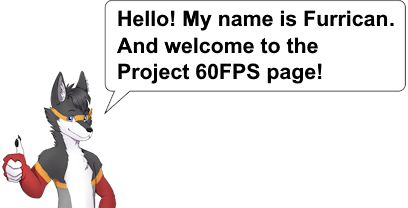
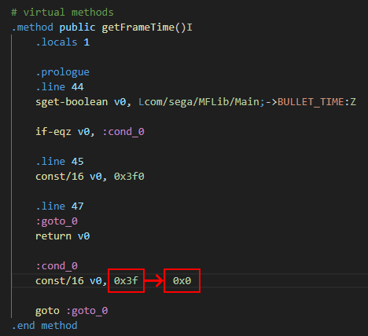
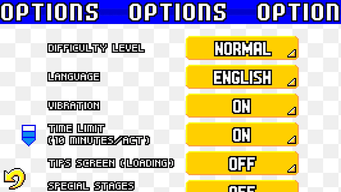
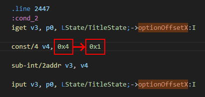
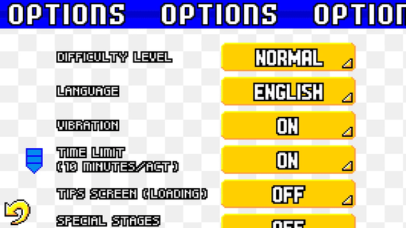

Project 60fps

The goal of this project is to make the Android port of Sonic Advance run at 60fps. However, while this sounds simple, this task is actually too demanding to make it possible. Therefore, I made this page to explain how to make the game run smoothly and why it is complicated.
Also, if you have enough experience with Java/Smali programming and would like to give some help for this project, you can contact me via the Furrican Homepage.
Well... the answer is actually simple!
First, you need to decompile the game's APK file to access the game's code. Then, all you have to do is to put a value to 0 in the getFrameTime() method of the MainState smali file located in the MFLib folder.
Once this value is changed, recompile the APK, and voila! Problem solved, right?
WRONG! As it turns out, doing so makes the game runs too fast! It runs 4 times faster than it supposed to be.
Before talking about the solution, I would like to explain what is going on in the game.
First of all, we all know that the Android port of Sonic Advance has a problematic frame rate. The original version of the Android port initally runs at 12-13fps. But the International mod makes the game run at 15fps.
While you might think that the game lags so much (at least, not in this way), the game is actually desigend to run at 15fps!
Here's the proof that the game is intended to run at this frame rate:
As you can see, this is the Options menu running at 15fps.
Now, what I'm gonna do is to change the value that determines the speed of the options banner.
Located in the TitleState smali file is the optionOffsetX value set to 4. This value determines the movement of the options banner per frame. When it's equal 4, that means the options banner moves 4 pixels to the left per frame.
For this example, I will put the optionOffsetX value to 1.
After decompilation, you can see that the options banner on top of the screen now moves 4 times slower.
Or more accurately, it moves 1 pixel to the left per frame.
However, if I make the game run at 60fps, here is how the options banner behaves:
As you can see now is that the options banner now moves at its intended speed, but in a smoother frame rate!
The options banner still moves 1 pixel to the left per frame, but because now the game runs at 60fps, it looks like I made the options banner moves smoother!
Alright. We have an example of how to fix an animation when giving the game a different frame rate.
Now, the question that is actually the right one to ask is this:
How to make the game run at 60fps and at the right speed?
Well, here's my theory: Since the game is intentionally running at 15fps, we have to change all the values regarding speed, physics, gravity, time and animation frames by dividing or multiplying all those values by 4. In this way, the game will run 4 times slower at 15fps, but it will run at normal speed at 60fps!
You might think that this is a good news, but the problem is that this is more complicated. You see, Sonic Advance is a quite an ambitious game in terms of programming. Tracking down every values regarding speed, physics, gravity, time and animation frames will take a lot of time, patience and understandings of the game's code. Not to mention a few glitches to take into consideration, such as the opening animation not working properly at one point.
With all that said, I need help from experimented Java/Smali programmers, with good debugging tools if possible, to complete this project. The frame rate is by far the most complained issue about the Android port of Sonic Advance. If we can solve this issue, we can finally have the best and definitive version of Sonic Advance on Android!